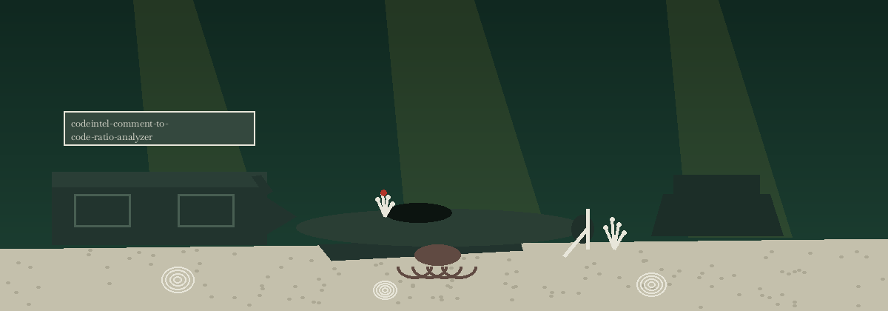

codeintel-comment-to-code-ratio-analyzer
The Blending Floor. A command line counter that weighs whole line comments against code lines in a file or a whole tree and reports the ratio it finds, leaving every judgement about the number to the reader.

Whole lines onlyA line counts as a comment only when the comment owns the whole line
Docstrings countBlock comments and docstrings count as comments by the tool's stated choice
Blank lines skippedThey weigh in neither pan
Whole treesDirectory mode walks every file regardless of extension, with per file counts and a summary
Usage
python3 main.py PATH [-e EXT,EXT] [-v]
The README never names the positional in its usage or parameter text; the first argument is the file or directory to weigh. A trailing comment rides with its code line and counts as code, and a file with no code lines at all reports a ratio of 0.0.
| Option | What it does |
|---|---|
path | The file or directory to weigh; never named in the README text. |
-e EXT,EXT | The README parameter list gives this flag No description provided; main.py's help text says it filters by file extension, a comma separated list. |
-v | The README parameter list gives this flag No description provided; main.py's help text calls it verbose output. |

What the scale does not say
- No threshold or judgement exists in the code. The GitHub description speaks of files that may have poor commenting; the tool itself reports a ratio and stops there.
- A directory run prints the skipped count whenever any file failed to read, and analyzing zero files exits 1. A single unreadable file exits 1, as does a path that is neither file nor directory.
Requirements
Python's standard library only. The requirements.txt file is a comment stating exactly that.